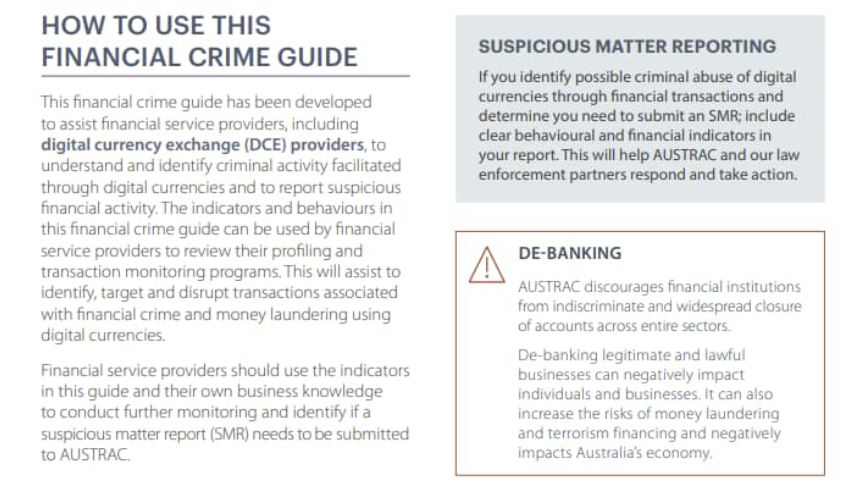
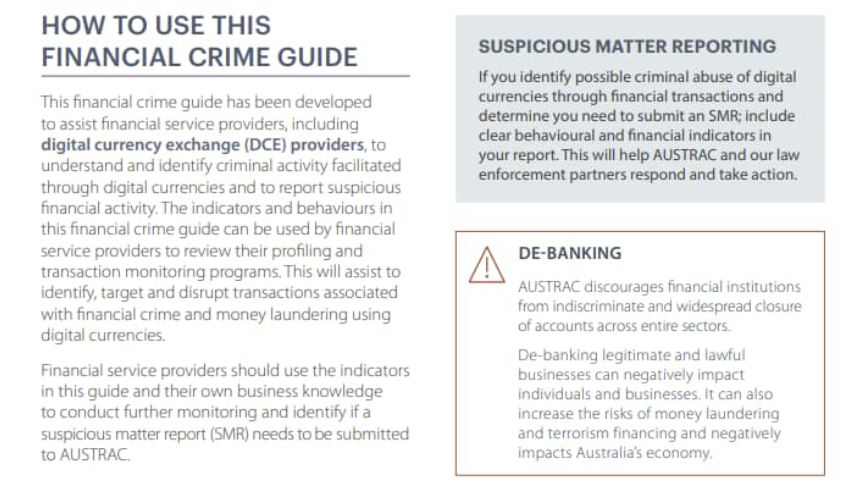

AUSTRAC Releases Guide on Profiling Crypto Transactions
~5 min read | Published on 2022-04-21, tagged General-News using 1119 words.
Australian Transaction Reports and Analysis Centre (AUSTRAC) released a guide on “preventing the criminal abuse of digital currencies.” Digital currency exchanges can use the lists of indicators in the guide to profile their customers.
The guide “provides financial indicators to help businesses, including digital currency exchange providers, recognize and report criminal activity through digital currencies,” according to the AUSTRAC website. The guide lists money laundering, the purchase and sale of illicit products via darknet marketplaces, terrorism financing, scams, tax evasion, and ransomware as serious crimes enabled by cryptocurrency.
In the money laundering section of the guide, AUSTRAC noted that criminals use mixing services and privacy coins to launder money.
“Although conversion services and privacy coins operate outside of the traditional banking sector, blockchain analysis tools can be used to identify digital currency addresses connected to conversion services, creating an opportunity for financial service providers to identify transactions coming from or going to these services.”

The most interesting part of the guide is the section on behavioral and financial indicators. Each listed indicator should trigger enhanced customer due diligence. If the digital currency exchange suspects a customer or transaction is linked to criminal activity, they must submit a Suspicious Matter Report to AUSTRAC.General Indicators Identification, verification, and profile information Behavioral Indicators
Customer is reluctant or declines to provide identification or personal information. Customer attempts to provide as little identity information as possible, including incomplete or insufficient identification information. Customer provides stolen, forged or fake documentation. Customer verification information is a photograph of data on a computer screen rather than the original document. Company beneficial ownership is difficult to establish. Customer provides documentation with identifiable alterations or of a low quality during on-boarding or when conducting ECDD. Customer on-boarding documentation is unable to be verified or does not match the details of the account. Customer acts on behalf of someone else (without disclosing the fact) or impersonates someone else. Customer appears to be using a virtual private network (VPN) or encrypted email in an attempt to hide their identity. Customer is known to law enforcement, via publicly available information. Customer frequently changes their identification information, including email addresses, internet protocol (IP) addresses, or financial information. Customer is difficult to contact, responds only via email or web chat, and at unusual hours. Customer uses a mail account provider known for high privacy features. Law enforcement or regulator interaction indicates that a customer is linked to illicit activity. Customer has adverse media or open source reports.
Source of funds and wealth Financial indicators
Customer has unexplained wealth or the source of their funds does not match their profile. Customer purchases large amounts of digital currency not substantiated by available wealth or consistent with their profile. Structuring (or perceived structuring) of government issued currency deposits or digital currency withdrawals via cryptocurrency ATMs or retail locations.
Behavioral Indicators
Customer provides inconsistent explanations as to the source of funds or source of wealth that are used for the purchase of digital currencies. Customer provides documents that appear to have been altered or of low quality during on-boarding or when conducting ECDD processes. Customer requests higher limits inconsistent with their occupation or profile. Customer is reluctant or declines to provide source of funds or wealth.
Account activity
Financial indicators
Use of chain-hopping in an apparent attempt to obfuscate source or destination of funds. Multiple customers send funds to the same external wallet address (that is not a service). Publicly available information such as sanctions lists or analytical tools indicate a customer’s wallets, or wallets the customer is transacting with, are associated or linked to illicit activity. Unusual transactions such as customer moving earnings through mixers, multiple conversions or layering through multiple exchanges prior to cashing out. Customers that regularly make significant profits or losses by transacting with the same subset of wallet addresses.Behavioral Indicators Multiple customer accounts are opened with either the same email address, phone number, IP address, residential address, postal address or on-boarding documents. Customer accesses their accounts from a high number of different electronic devices or IP addresses. Customer lacks knowledge or provides inaccurate information about the transaction, the source of funds, or the wallet address where they want to send the digital currency. Customer seems anxious or impatient with the time taken to make a large transaction. Customer is evasive as to the reason for the transfer. Customer wants to increase transaction limits shortly after opening an account. Customer creates or attempts to create separate accounts under different names to circumvent restrictions on trading or withdrawal limits imposed. Customer attempts to coerce or persuade staff to ignore reporting obligations or break normal protocol to conduct a transaction. Customer consistently conducts transactions under actual or perceived reporting thresholds. Customer gambles with digital currency or has transactions to/from gambling websites. Customer uses privacy enhanced digital currencies which do not appear to be used for investment purposes. Customer IP addresses do not match the state or country the customer resides in.
Crime-Specific Indicators
Financial indicators [/b]
Blockchain analysis tools link a customer’s transactions to darknet clusters, child exploitation clusters, mixers or high risk exchanges. Customer’s wallet addresses show exposure to high-risk conversion services or darknet marketplaces. Use of, or donations to darknet explorers, including a platform enabling anonymized internet access indicating access to, and possible illicit purchases on the darknet marketplaces.
Terrorism Financing (totally real) Financial indicators
Public information or blockchain analysis tools indicate a customer has transacted with websites or wallet addresses considered to be high risk for terrorism activities or proliferation financing. Transactions with sanctioned wallet addresses or people of interest listed on government websites, such as the Office of Foreign Assets Control (OFAC) or the Department of Foreign Affairs and Trade (DFAT). Transactions to crowdfunding or online fundraising campaigns linked to ideologically or religiously motivated violent extremism focused forums. Transfers to/from international exchanges with less stringent ‘know your customer’ processes, including those owned or hosted in high risk jurisdictions. Customer account receives multiple small deposits, which are immediately transferred to private wallets.Behavioral Indicators
Social media (or online profiles/handles) indicate the customer holds ideologically or religiously motivated violent extremism ideologies or sympathies.
Tax Evasion Financial indicators
Use of services that do not make commercial or economic sense. For example, a business moving earnings through mixers or an individual converting a digital currency multiple times prior to cashing out, incurring additional conversion fees.
Behavioral Indicators
Customer makes enquires about avoiding tax reporting obligations. Customer asks if personal or transaction information will be shared with the Australian Taxation Office. Customer requests to hide or delete transaction activity held. Customer sends or receives government issued currency to a wide range of related personal or business accounts at different institutions.
Preventing the Criminal Abuse of Digital Currencies Financial Crime Guide
The guide “provides financial indicators to help businesses, including digital currency exchange providers, recognize and report criminal activity through digital currencies,” according to the AUSTRAC website. The guide lists money laundering, the purchase and sale of illicit products via darknet marketplaces, terrorism financing, scams, tax evasion, and ransomware as serious crimes enabled by cryptocurrency.
In the money laundering section of the guide, AUSTRAC noted that criminals use mixing services and privacy coins to launder money.
“Although conversion services and privacy coins operate outside of the traditional banking sector, blockchain analysis tools can be used to identify digital currency addresses connected to conversion services, creating an opportunity for financial service providers to identify transactions coming from or going to these services.”

The report suggests that businesses avoid “de-banking” suspicious customers.
The most interesting part of the guide is the section on behavioral and financial indicators. Each listed indicator should trigger enhanced customer due diligence. If the digital currency exchange suspects a customer or transaction is linked to criminal activity, they must submit a Suspicious Matter Report to AUSTRAC.General Indicators Identification, verification, and profile information Behavioral Indicators
Source of funds and wealth Financial indicators
Behavioral Indicators
Account activity
Financial indicators
Crime-Specific Indicators
Financial indicators [/b]
Terrorism Financing (totally real) Financial indicators
Social media (or online profiles/handles) indicate the customer holds ideologically or religiously motivated violent extremism ideologies or sympathies.
Tax Evasion Financial indicators
Behavioral Indicators
Preventing the Criminal Abuse of Digital Currencies Financial Crime Guide